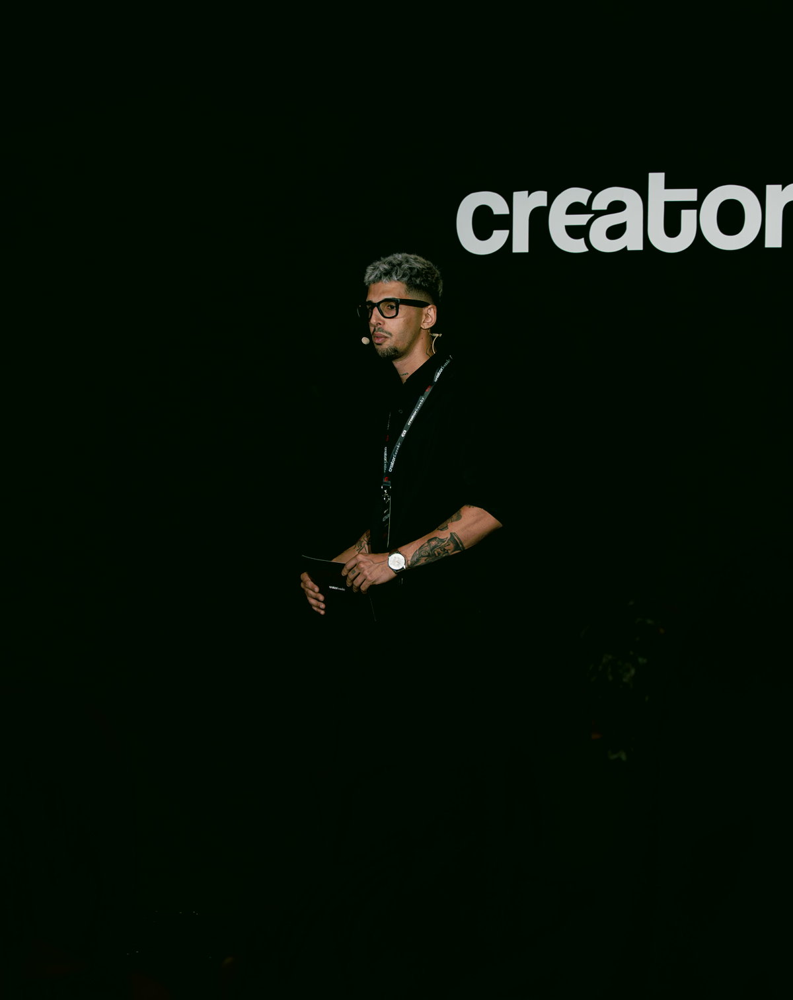

Alejandro Silvestre
@s4sf_ai
Construyo y gestiono empresas con IA, desarrollo software a medida y lo comparto todo en abierto. Contenido RAW a diario.
Entrar a la formación© · s4sf · BlackWolf Enterprises

Construyo y gestiono empresas con IA, desarrollo software a medida y lo comparto todo en abierto. Contenido RAW a diario.
Entrar a la formación© · s4sf · BlackWolf Enterprises